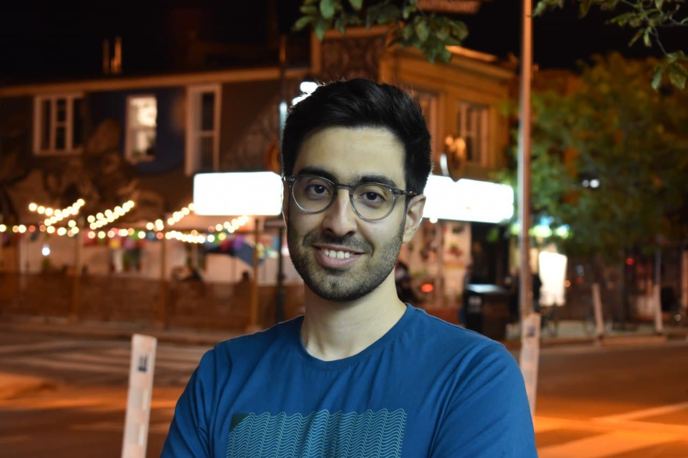

Email : "parsap" at "cs.toronto.edu"
CV : PDF - Updated: Jan. 2021
Hi! I am Parsa Pazhooheshy, a PhD student in CS department at University of Toronto. I work under the supervision of Prof. Yashar Ganjali. I am broadly intereted in Computer Networks with focus on designing new protocls for various networks like congestion control in 5G, migration protocols and load balancing algorithms in datacenter networks. Also, I am intereted in ML for Networking. For more details, see my CV.
Correlation-Aware Flow Consolidation for Load Balancing and Beyond WAIN 2021
Max Planck Institute for Software Systems (MPI-SWS)
| Research Intern Under Supervision of Prof. Keon Jang | Jul. - Sep. 2019 |
Sharif University of Technology (SUT)
| Undergraduate research student | Dec. 2018 - Jun. 2019 |
University of Toronto
| Ph.D. in Computer Science, Advisor: Prof. Yashar Ganjali | 2020 - Now |
Sharif University of Technology
| B.Sc. in Electrical Engineering | 2015 - 2020 |
Teaching Assistant